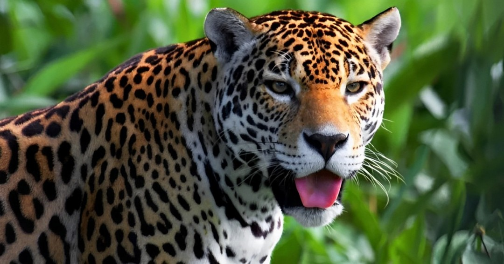

Onça pintada
Originalmente, a onça-pintada ocorria desde o sudoeste dos Estados Unidos até a região central da Argentina. Hoje, ocorre desde o México até o norte da Argentina. Está presente em quase todo o Brasil, que possui a maior população de onças-pintadas do mundo, sendo o principal país na conservação e sobrevivência da espécie em longo prazo.
As onças se adaptam a diversos tipos de ecossistemas. Podem ocorrem em áreas de floresta fechada, campos abertos ou regiões áridas e semidesérticas, apesar de preferirem áreas úmidas, com corpos d’água. No Brasil, ocorrem em quase todos os biomas, exceto no Pampa, onde já estão extintas.
No Pantanal e na Amazônia, as suas populações são maiores e mais estáveis, devido à menor taxa de ocupação humana e às maiores áreas preservadas. No Cerrado, a população é menor, mas ainda existe em números consideráveis. Já na Caatinga e na Mata Atlântica, existe em números muito pequenos, correndo sérios risco de extinção local.
As áreas de vida das onças podem variar muito de Norte a Sul do país devido a alguns fatores, como disponibilidade de presas, fontes de água, densidade populacional de outras onças e características do bioma.